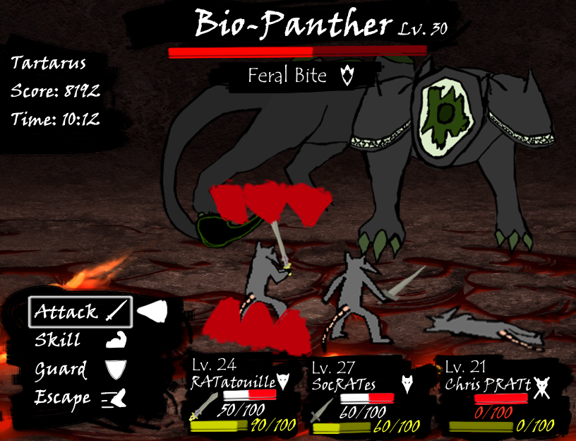

The Biopanther
After discovering a keycard, the player opens a locked door into a new area, a cave filled with sulfuric vents that release toxic gas. Traversing the overworld is done in a top-down 2D style and they move on a grid-based system. The player has a torch, emitting a modest aura of light around them, allowing them limited visibility. The cave is full of sulfuric vents that emit a green gas aura. Standing too close to the vents causes the player to get poisoned, so they walk the path between the vents to avoid the toxic gas. As they explore the cave, they hear the low growl of a predator, a sign that they have been detected by an enemy. The player can either try to hide, run, or fight. The player decides to run, but in the dark, the player must rely on sound to evade the predator. But before they can escape, a giant three-headed hound catches them, initiating combat. The player is underprepared and is quickly defeated. Later, the player learns that the three-headed hound is eyeless, relying on scent to detect its prey. Using the sulfuric vents, the player can mask their scents. By equipping a gas mask, players can traverse this area without getting poisoned and without alerting the hound, adapting to this area and allowing them to survive.